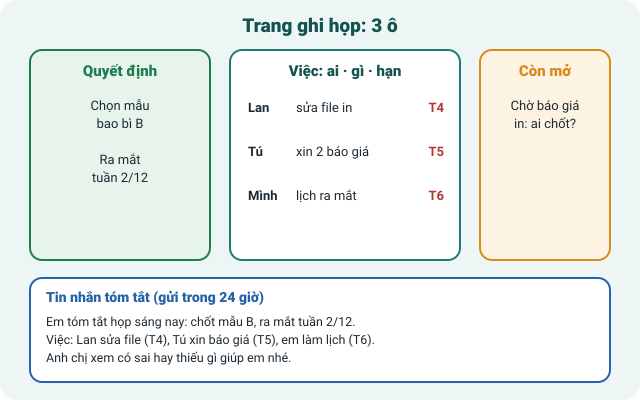

K1 · Lắng nghe và hiểu đúng › Bậc 3 Vững vàng
Nghe trong cuộc họp và chốt việc bằng tin nhắn tóm tắt
Bài này làm Tờ 2: Trang ghi họp. Mẫu in.
1. Mục tiêu
- Ghi một cuộc họp theo 3 ô: quyết định, việc (ai, gì, hạn), câu hỏi còn mở.
- Viết tin nhắn tóm tắt họp dưới 80 chữ để mọi người xác nhận.
2. Khởi động truy xuất
- Bốn ô sắp ưu tiên dựa trên hai câu hỏi nào?
- Khi hai người cùng giao việc gấp, bạn hỏi ai để chọn thứ tự?
Đáp án
- Nếu trễ thì ảnh hưởng lớn hay nhỏ? Hạn gần hay xa?
- Quản lý trực tiếp của bạn.
Xem lại: Sắp ưu tiên khi nhiều việc.
3. Giải thích
Họp xong, mỗi người thường nhớ một kiểu. Một tuần sau, việc bị trễ vì "tưởng anh làm". Người mới có thể giúp cả nhóm bằng cách nghe kỹ và chốt việc.
Trong lúc họp, ghi vào 3 ô:

- Quyết định: điều cả nhóm đã chốt. Ghi ngắn, đúng ý người chủ trì.
- Việc: mỗi dòng có ai, làm gì, hạn khi nào. Thiếu một trong ba thì chưa phải việc.
- Câu hỏi còn mở: điều chưa chốt, và ai sẽ trả lời.
Nghe để bắt tín hiệu. Câu như "Thôi cứ vậy đi", "Em lo phần này nhé" thường là quyết định hoặc giao việc. Khi nghe thấy, hỏi lại ngay: "Dạ, hạn phần này là thứ mấy ạ?"
Sau họp, gửi tóm tắt trong 24 giờ.
Tin nhắn tóm tắt họp
- Quyết địnhMột câu.
- ViệcMỗi người một dòng: tên, việc, hạn.
- Câu hỏi còn mởAi trả lời, khi nào.
- Xin xác nhận"Anh chị xem có sai hay thiếu gì không ạ?"
Gửi vào nhóm chat hoặc email mà mọi người dự họp cùng xem. Nếu chủ trì đã có biên bản chính thức, hãy dùng biên bản đó. Lúc này bạn chỉ cần ghi việc của mình vào Tờ 1.
Lưu ý bảo mật. Nội dung họp có thể là thông tin nội bộ. Chỉ gửi cho người dự họp, qua kênh công ty dùng.
4. Ví dụ tại nơi làm việc Việt Nam
Tình huống giả định. Quân là nhân viên marketing mới ở một công ty sản xuất nước mắm tại Phan Thiết. Quân dự họp 30 phút về bao bì mới.
Trong họp, trưởng phòng nói: "Thôi lấy mẫu B. Lan sửa file in nhé. Tú hỏi thêm vài chỗ in." Quân hỏi lại: "Dạ, Lan sửa xong khi nào, và Tú cần mấy báo giá ạ?" Trưởng phòng đáp: "Lan thứ Tư, Tú hai báo giá trước thứ Năm."
Chiều hôm đó, Quân gửi tóm tắt như Hình 1. Tú trả lời: "Anh ơi, báo giá in em gửi thứ Sáu được không, nhà in nghỉ thứ Năm." Trưởng phòng đồng ý ngay trong nhóm.
Vì sao cách này tốt: Câu hỏi lại trong họp biến "vài chỗ in" thành con số và hạn. Tin tóm tắt làm lộ vướng mắc sớm, khi còn kịp đổi.
5. Thực hành
Tình huống giả định. Bạn mới vào phòng nhân sự một chuỗi nhà thuốc tại Hải Phòng. Ghi chép họp của bạn như sau: "Tuyển thêm 3 dược sĩ cho 2 cửa hàng mới. Chị Hoa đăng tin tuyển dụng tuần này. Mình lo lịch phỏng vấn. Lương khởi điểm chưa chốt, chờ giám đốc. Khai trương ngày 15/12."
Sắp lại vào 3 ô. Viết tin nhắn tóm tắt dưới 80 chữ.
Gợi ý 1
Việc "Mình lo lịch phỏng vấn" còn thiếu thành phần nào trong ai, gì, hạn?
Gợi ý 2
Lương khởi điểm là câu hỏi còn mở. Ghi rõ ai sẽ trả lời.
Lời giải mẫu
- Quyết định: tuyển 3 dược sĩ cho 2 cửa hàng mới, khai trương 15/12.
- Việc: chị Hoa đăng tin trước thứ Sáu tuần này. Mình lập lịch phỏng vấn, hạn cần hỏi lại.
- Còn mở: lương khởi điểm, chờ giám đốc chốt.
Tin nhắn: "Em tóm tắt họp sáng nay: tuyển 3 dược sĩ cho 2 cửa hàng mới, khai trương 15/12. Chị Hoa đăng tin trước thứ Sáu. Em lập lịch phỏng vấn, em gửi bản nháp thứ Hai tới được không ạ? Lương khởi điểm chờ giám đốc chốt. Anh chị xem có sai hay thiếu gì giúp em nhé."
(Tin nhắn khoảng 60 chữ. Nội dung là giả định.)
6. Tự kiểm tra
Chọn đáp án. Mỗi lựa chọn đều có giải thích.
Câu 1. Dòng ghi nào đủ để là một việc trong ô Việc?
-
Chưa đúng. Thiếu người làm và hạn. Dễ thành việc không ai nhận.
-
Đúng. Đúng. Có đủ ai, làm gì, hạn khi nào.
-
Chưa đúng. Có độ gấp nhưng thiếu người làm và hạn cụ thể.
Câu 2. Trong họp, trưởng nhóm nói: "Em lo vụ khảo sát nhé." Bạn nên làm gì ngay?
-
Chưa đúng. Sau họp khó hỏi lại đủ người. Hỏi ngay thì nhanh và rõ hơn.
-
Đúng. Đúng. Câu hỏi biến lời giao việc chung chung thành kết quả và hạn rõ ràng.
-
Chưa đúng. Đây là giao việc, nên ghi vào ô Việc, kèm ai và hạn.
Câu 3. Tin nhắn tóm tắt họp nên gửi khi nào?
-
Đúng. Đúng. Mọi người còn nhớ, nên dễ sửa chỗ sai và lộ vướng mắc sớm.
-
Chưa đúng. Lúc đó có hiểu sai thì đã muộn để sửa.
-
Chưa đúng. Thường không ai hỏi, cho đến khi việc bị trễ.
Câu 4. Cuộc họp bàn về giá bán mới, chưa công bố. Bạn gửi tóm tắt cho ai?
-
Chưa đúng. Giá chưa công bố là thông tin nội bộ. Chỉ gửi cho người dự họp.
-
Đúng. Đúng. Đủ người cần biết, không lộ thông tin ra ngoài.
-
Chưa đúng. Kênh cá nhân có thể vi phạm quy định bảo mật của công ty.
7. Phản tư
- Cuộc họp gần nhất, có việc nào không rõ ai làm hoặc hạn khi nào? Chuyện gì xảy ra sau đó?
- Câu nào bạn có thể hỏi lại ngay trong họp, mà vẫn lịch sự?
8. Áp dụng thật
Trong 7 ngày tới, ghi một cuộc họp vào Tờ 2. Nếu nhóm chưa có biên bản, xin phép người chủ trì rồi gửi tin tóm tắt. Ghi lại ai đã sửa hoặc bổ sung gì.
9. Siêu dữ liệu
| skill | K1 · Lắng nghe và hiểu đúng |
|---|---|
| level | Bậc 3 · Vững vàng |
| group | N3 |
| framework_map | WEF: Empathy and active listening; CSfW: 2a Communicate for work; SkillsFuture CCS: Communication; LifeComp: S2 Communication (chỉ dẫn chiếu) |
| updated | 2026-11-14 |
Hoàn thành bài
Đánh dấu đã học để site gợi ý lịch ôn sau 1, 3 và 7 ngày. Dữ liệu chỉ lưu trên máy của bạn.
Lịch ôn gợi ý: